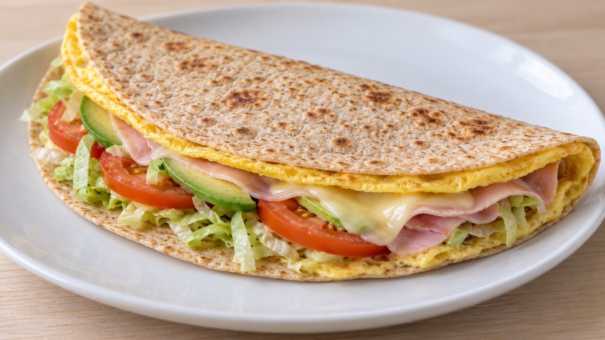

Fajita de francesa y pavo

Ingredientes
- 1 tortilla/piadina grande (integral o de espelta)
- 2 huevos
- 1 loncha grande de pavo o jamón cocido (unos 25 g; mínimo 90 % de carne)
- 1 loncha de queso (unos 20 g)
- ½ tomate pequeño (unos 50 g)
- ¼ de aguacate mediano
- 1 hoja de lechuga (o un puñadito de brotes o canónigos)
- ½ cucharadita aceite de oliva
Indicaciones
Prepara el relleno. Corta el tomate en rodajas finas y déjalo escurrir bien. Lava y seca las hojas; si usas lechuga, pícala en tiras finas. Corta el aguacate en láminas y ten a mano el pavo o jamón y el queso.
Templa la tortilla de trigo. Calienta la tortilla o piadina en una sartén antiadherente unos 30 segundos por cada cara, o el tiempo que indique el envase. Retírala y mantenla tapada mientras preparas el huevo. Usa una sartén de tamaño parecido al de la tortilla para que ambas capas encajen.
Cuaja la francesa y dale la vuelta. Bate los huevos. Añade la media cucharadita de aceite a la sartén y repártela por la base. Vierte el huevo a fuego medio-bajo. Cuando empiece a cuajar por debajo pero la superficie siga húmeda, coloca encima la tortilla de trigo y presiona suavemente para que se adhiera. Cubre con un plato y da la vuelta con cuidado. Devuelve el conjunto a la sartén con la tortilla de trigo abajo y el huevo hacia arriba.
Rellena y dobla. Reparte el queso y el pavo o jamón sobre una mitad de la francesa. Cocina brevemente a fuego bajo hasta que el huevo termine de cuajar y el queso empiece a fundirse. Retira a un plato, añade el tomate, el aguacate y las hojas, y dobla por la mitad.
Para compartir
Para compartir, puedes preparar dos fajitas con tortillas pequeñas, repartiendo los ingredientes entre ambas y usando una sartén de su tamaño. La cantidad total sigue siendo una ración.
Fuente
🌿 Adaptada de una receta de Eva, la nutricionista